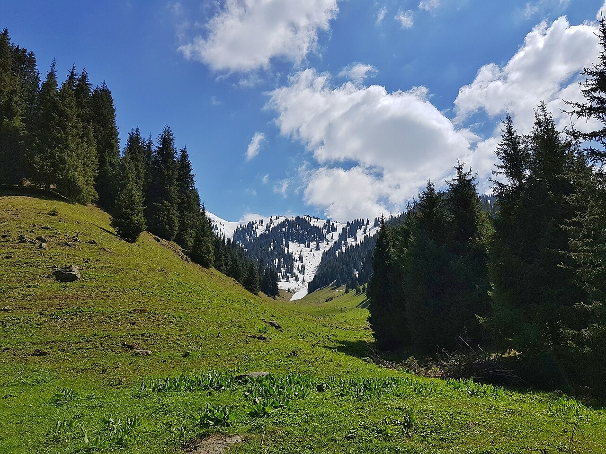

Заилийский Алатау, 43° с. ш.
Горы Алматы в часе езды от города
Походы на день и на выходные — для тех, кто идёт впервые, и для тех, кто уже был на БАО. Маршрут, снаряжение и безопасность берём на себя.

О нас
Ходим в горы с 2018 года
В команде Tau Trek четыре гида. Все они выросли в Алматы и знают тропы от Медеу до Большого Алматинского озера.
- Группы не больше 12 человек
- Аптечка, рация и страховка в каждом походе
- Трансфер от центра города
Девять сезонов без происшествий
Считаем с первого выхода на Кок-Жайляу весной 2018-го.
- 1 200+ участников
- 24 маршрута
- 4 гида
- 4,9 средняя оценка
До ближайшего похода
Группы выходят каждую субботу в 7:00 от ТРЦ «Есентай Молл».
0дней
00часов
00минут
00секунд
Не знаете, с чего начать?
Оставьте телефон — гид перезвонит, спросит про опыт и подскажет тропу. Чаще всего начинают с Кок-Жайляу.